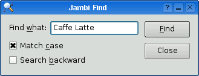

|
|
Qt Jambi is the Java edition of the Qt application development framework. At the heart of Qt Jambi are the C++ libraries that form Qt, made available to Java programmers through the Java Native Interface (JNI). Although considerable effort has gone into making Qt Jambi integrate smoothly with Java and to make its API natural to use for Java programmers, C++/Qt programmers will still find the API familiar and predictable. All the classes are documented using Javadoc at http://doc.trolltech.com/qtjambi/.
Until now, Java GUI programmers have had to make do with AWT, Swing, SWT, and similar GUI class libraries, none of which are as convenient to use or as powerful as Qt. For example, in the traditional Java GUI libraries, connecting a user action, such as clicking a button, to a corresponding method involves writing an event listener class; in Qt Jambi, only one line of code is required to achieve the same thing. And Qt's layout managers are much easier to use than Swing's BoxLayout and GridBagLayout, and they produce better-looking results.
Qt Jambi applications can have main windows with menu bars, toolbars, dock windows, and a status bar, just like Qt applications written in C++. They also have the native look and feel of the platform they are running on, and they respect the user's preferences regarding themes, colors, fonts, and so on. With the full power of Qt under the hood, Qt Jambi applications can take advantage of Qt's powerful 2D graphics architecture (notably the graphics view framework) and of extensions such as OpenGL.
The benefits of Qt Jambi are not limited to Java programmers. In particular, C++ programmers can make their custom Qt components available to Java programmers using the same generator tool that Trolltech uses to make the Qt API available in Qt Jambi.
In this appendix, we will show how Java programmers can start using Qt Jambi to create GUI applications. Then we will show how to make use of Qt Jambi in Eclipse, which integrates Qt Designer, and finally we will show how to make custom C++ components available to Qt Jambi programmers. This appendix assumes that you are familiar with C++/Qt programming and with Java. Qt Jambi requires Java 1.5 or later.
In this section, we will develop a small Java application that presents the window shown in Figure C.1. Apart from its window title, the Jambi Find dialog has the same appearance and behavior as the Find dialog we created back in Chapter 2. By reusing the same example, we can more easily see the differences and similarities between C++/Qt and Qt Jambi programming. While reviewing the code, we will discuss the conceptual differences between C++ and Java as they arise.

The implementation of the Jambi Find application is done in a single file called FindDialog.java. We will review the contents of this file piece by piece, starting with the import declarations.
import com.trolltech.qt.core.*; import com.trolltech.qt.gui.*;
Between them, these two import declarations make all of Qt's core and GUI classes available to Java. Additional sets of classes can be made available with similar import declarations (e.g., import com.trolltech.qt.opengl.*).
public class FindDialog extends QDialog {
The FindDialog class is a subclass of QDialog, like in the C++ version of the example. In C++, we declare signals in the header file, relying on the moc tool to generate the supporting code. In Qt Jambi, Java's introspection facilities are used to implement the signals and slots mechanism. But we still need some means of declaring signals, and this is done using the SignalN classes:
public Signal2<String, Qt.CaseSensitivity> findNext =
new Signal2<String, Qt.CaseSensitivity>();
public Signal2<String, Qt.CaseSensitivity> findPrevious =
new Signal2<String, Qt.CaseSensitivity>();
There are ten SignalN classes—Signal0, Signal1<T1>, ..., Signal9<T1, ...,T9>. The numbers in their names indicate how many arguments they take, and the types T1, ..., T9 specify the types of the arguments. Here, we have declared two signals, each taking two arguments. In both cases, the first argument is a Java String, and the second argument is of type Qt.CaseSensitivity, a Java enum type. Wherever a QString is needed in the Qt API, in Qt Jambi we use a String instead.
Unlike the other SignalN classes, Signal0 is not a generic class. To create a signal with no arguments, we use Signal0 like this:
public Signal0 somethingHappened = new Signal0();
Having created the signals we need, we are now ready to see the implementation of the constructor. The method is quite long, so we will look at it in three parts.
public FindDialog(QWidget parent) {
super(parent);
label = new QLabel(tr("Find &what:"));
lineEdit = new QLineEdit();
label.setBuddy(lineEdit);
caseCheckBox = new QCheckBox(tr("Match &case"));
backwardCheckBox = new QCheckBox(tr("Search &backward"));
findButton = new QPushButton(tr("&Find"));
findButton.setDefault(true);
findButton.setEnabled(false);
closeButton = new QPushButton(tr("Close"));
The only differences between creating the widgets in Java compared to C++ are the small details of syntax. Note that tr() returns a String, not a QString.
lineEdit.textChanged.connect(this, "enableFindButton(String)");
findButton.clicked.connect(this, "findClicked()");
closeButton.clicked.connect(this, "reject()");
The syntax for signal–slot connections in Qt Jambi is somewhat different than in C++/Qt, but it is still short and simple. In general, the syntax is
sender.signalName.connect(receiver, "slotName(T1, ..., TN)");
Unlike in C++/Qt, we don't need to specify a signature for the signal. If a signal has more parameters than the slots it connects to, the additional parameters are ignored. Furthermore, in Qt Jambi, the signal–slot mechanism is not limited to QObject subclasses: Any class that inherits QSignalEmitter can emit signals, and any method of any class can be a slot.
QHBoxLayout topLeftLayout = new QHBoxLayout();
topLeftLayout.addWidget(label);
topLeftLayout.addWidget(lineEdit);
QVBoxLayout leftLayout = new QVBoxLayout();
leftLayout.addLayout(topLeftLayout);
leftLayout.addWidget(caseCheckBox);
leftLayout.addWidget(backwardCheckBox);
QVBoxLayout rightLayout = new QVBoxLayout();
rightLayout.addWidget(findButton);
rightLayout.addWidget(closeButton);
rightLayout.addStretch();
QHBoxLayout mainLayout = new QHBoxLayout();
mainLayout.addLayout(leftLayout);
mainLayout.addLayout(rightLayout);
setLayout(mainLayout);
setWindowTitle(tr("Jambi Find"));
setFixedHeight(sizeHint().height());
}
The layout code is practically identical to the C++ original, with the same layout classes working in exactly the same way. Qt Jambi can also use forms created with Qt Designer, using juic (the Java user interface compiler), as we will see in the next section.
private void findClicked() {
String text = lineEdit.text();
Qt.CaseSensitivity cs = caseCheckBox.isChecked()
? Qt.CaseSensitivity.CaseSensitive
: Qt.CaseSensitivity.CaseInsensitive;
if (backwardCheckBox.isChecked()) {
findPrevious.emit(text, cs);
} else {
findNext.emit(text, cs);
}
}
The Java syntax for referring to enum values is a bit more verbose than in C++, but it is easy to understand. To emit a signal, we call the emit() method on a SignalN object, passing arguments of the correct types. The type-checking is done when the program is compiled.
private void enableFindButton(String text) {
findButton.setEnabled(text.length() == 0);
}
The enableFindButton() method is essentially the same as the C++ original.
private QLabel label;
private QLineEdit lineEdit;
private QCheckBox caseCheckBox;
private QCheckBox backwardCheckBox;
private QPushButton findButton;
private QPushButton closeButton;
In keeping with the code in the rest of the book, we have declared all the widgets as private fields of the class. This is purely a matter of style; nothing is stopping us from declaring in the constructor itself those widgets that are referred to only in the constructor. For example, we could have declared label and closeButton in the constructor since they are not referred to anywhere else, and they would not be garbage-collected when the constructor finishes. This works because Qt Jambi uses the same parent–child ownership mechanism as C++/Qt, so once the label and closeButton are laid out, the FindDialog form takes ownership of them, and behind the scenes it keeps a reference to them to keep them alive. Qt Jambi deletes child widgets recursively, so if a top-level window is deleted, the window in turn deletes all its child widgets and layouts, which delete theirs, and so on, until cleanup is complete.
Qt Jambi makes full use of Java's garbage-collection functionality, so unlike AWT, Swing, and SWT, if the last reference to a top-level window is deleted, the window will be scheduled for garbage collection, and no explicit call to dispose() is necessary. This approach is very convenient and works the same as in C++/Qt. The main caveat is that for SDI (single document interface) applications, we must keep a reference to each top-level window that is created, to prevent them from being garbage-collected. (In C++/Qt, SDI applications normally use the Qt::WA_DeleteOnClose attribute to prevent memory leaks.)
public static void main(String[] args) {
QApplication.initialize(args);
FindDialog dialog = new FindDialog(null);
dialog.show();
QApplication.exec();
}
}
For convenience, we have provided the FindDialog with a main() method that instantiates a dialog and pops it up. The import com.trolltech.qt.gui.* declaration ensures that a static QApplication object is available. When a Qt Jambi application starts, we must call QApplication.initialize() and pass it the command-line arguments. This allows the QApplication object to handle the arguments it recognizes, such as -font and -style.
When we create the FindDialog, we pass null as parent to signify that the dialog is a top-level window. Once the main() method is finished, the dialog will go out of scope and be garbage-collected. The call to QApplication.exec() starts off the event loop, and returns control to the main() method only when the user closes the dialog.
The Qt Jambi API is very similar to the C++/Qt API, but there are some differences. For example, in C++, the QWidget::mapTo() member function has the following signature:
QPoint mapTo(QWidget *widget, const QPoint &point) const;
The QWidget is passed as a non-const pointer, whereas the QPoint is passed as a const reference. In Qt Jambi, the equivalent method has the signature
public final QPoint mapTo(QWidget widget, QPoint point) { ... }
Because Java does not have pointers, there is no visual distinction in method signatures to indicate whether an object passed to a method can be modified by the method. In theory, the mapTo() method could alter either parameter since they are both references, but Qt Jambi promises not to alter the QPoint argument, since in C++ it is passed as a constant reference. From the context, it is usually clear which parameters are alterable and which are not. In case of doubt, we can refer to the documentation to clarify the situation.
In addition to not altering arguments that are passed by value or as constant references in C++, Qt Jambi also promises that the return value of any non-void method, which in C++ would be returned as a value or as a constant reference, is an independent copy, so altering it will not lead to any side effects.
We mentioned earlier that in Qt Jambi, wherever a QString would be used in C++/Qt, a Java String is used instead. This kind of correspondence also applies to the QChar class, which has two Java equivalents: char and java.lang.Character. There are similar correspondences regarding some of Qt's container classes: QHash is replaced by java.util.HashMap, QList and QVector by java.util.List, and QMap by java.util.SortedMap. In addition, QThread is replaced by java.lang.Thread.
The Qt model/view architecture and the database API make extensive use of QVariant. Such a type isn't needed in Java because all Java objects have java.lang.Object as an ancestor, so throughout Qt Jambi's API, QVariant is replaced by java.lang.Object. The extra methods that QVariant provides are available as static methods in com.trolltech.qt.QVariant.
We have now finished reviewing a small Qt Jambi application, and we discussed many of the conceptual differences between Qt Jambi and C++/Qt programming. Building and running a Qt Jambi application is no different from any other Java application, except that the CLASSPATH environment variable must specify the directory where Qt Jambi is installed. We must compile the class using a Java compiler and then we can execute the class using a Java interpreter. For example:
export CLASSPATH=$CLASSPATH:$HOME/qtjambi/qtjambi.jar:$PWD javac FindDialog.java java FindDialog
Here we have used the Bash shell to set the CLASSPATH environment variable; other command-line interpreters may require a different syntax. We include the current directory in the CLASSPATH so that the FindDialog class itself can be found. On Mac OS X, the command-line option -XstartOnFirstThread must be supplied to java to address a threading issue with Apple's Java virtual machine. On Windows, we execute the application like this:
set CLASSPATH=%CLASSPATH%;%JAMBIPATH%\qtjambi.jar;%CD% javac FindDialog.java java FindDialog
Qt Jambi can also be used within an IDE. In the next section, we will look at how to edit, build, and test a Qt Jambi application using the popular Eclipse IDE.
|
|
| Converted from CHM to HTML with chm2web Pro 2.85 (unicode) |